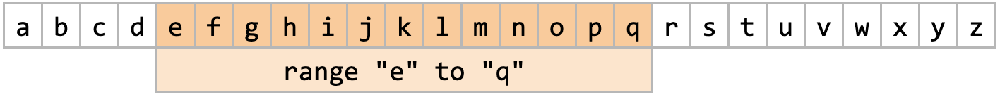

Ruby Monstas
Ranges
Ranges
Ruby allows us to build ranges and then loop through their items.
Building a range
Ranges normally have a start and an end.
Example: from e to q
Range.new("e", "q")
# or
("e".."q")Methods on Ranges
There are multiple useful methods on ranges:
.begin.end.count.cover?(value).to_a.each
For a full list of methods visit the official Ruby Documentation.
Methods on Ranges: Examples
(Try these in IRB)
(23..42).begin # => 23
("f".."t").end # => "t"
(20..30).count # => 11
("B".."S").cover?("J") # => true
("abc".."abe").to_a # => ["abc", "abd", "abe"].each
Using the method .each we can iterate through the items
morning_hours = (8..12)
morning_hours.each do |item|
puts "#{item} is a morning hour"
endResult
8 is a morning hour 9 is a morning hour 10 is a morning hour 11 is a morning hour 12 is a morning hour
Exclude the last
If we want to exclude the last item within the range, we can do so by using three dots:
("x"..."z").to_a # => ["x", "y"]Additional Resources
What questions do you have?